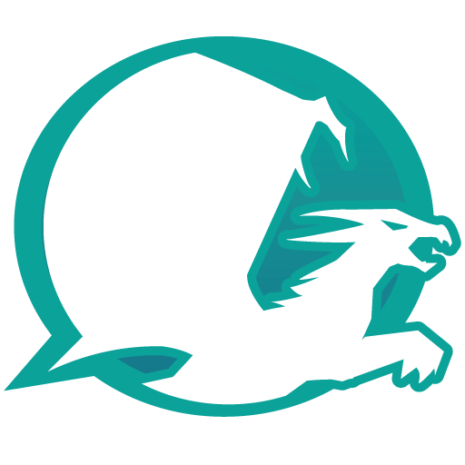

Discord 認證機器人
讓你的預覽，
豐富精彩。
ermiana 會自動解析分享內容，把失效的圖片、標題和內文重新帶回 Discord。少一次跳轉，多一點順暢的對話。
6,000+Discord 伺服器
900,000+使用者
< 1s平均解析速度

 @orihi_
@orihi_

✓ 自動解析
↗ 顯示更多資訊
自動連結預覽
貼上連結，
內容自然展開。
不需要點開外部網站。ermiana 會在訊息送出後自動解析連結，將內容整理成 Discord 裡可以直接閱讀的預覽。
- 標題、內文與圖片
- 補上原本失效或不完整的網站預覽。
- 維持原本的分享習慣
- 自動處理支援網站的連結，不必額外輸入指令。
實用指令與管理工具
需要時可以手動進行調整
/fix- 手動產生連結預覽
/check- 檢查頻道與 Bot 權限限管理員
/banpreview- 開關特定網站的預覽限管理員
/resetpreview- 恢復所有網站的預覽限管理員
一般分享會自動解析，指令只在需要時使用。
支援網站
你熟悉的網站，都在這裡。
針對台灣與東亞常用平台提供預覽。
- PTT

巴哈姆特- 噗浪
- Pixiv
- Threads
- Bluesky
- Misskey
- Bilibili
- TikTok
- PChome
- ehentai
- nhentai
支援平台一覽支援範圍會隨網站變化持續更新。
受到社群的廣泛信任
從小群組，
到熱鬧的大型社群。
管理員可以放心加入，成員幾乎感覺不到他的存在。
不需要學習新的操作方式，也不必改變原本分享連結的習慣——只會發現每個連結都變得更完整、更清楚，也更容易閱讀。
- Discord 伺服器
- 6,000+
- 使用者
- 900,000+
- GitHub Stars
- 60+
OPEN SOURCE
信任，建立在
透明與認證之上。
開放原始碼、通過 Discord 官方認證，讓信任不只停留在承諾。
使用 MIT 授權開放原始碼，並部署於 Google Cloud。從程式碼、平台認證到服務基礎設施，我們選擇用看得見的方式建立信任。
GitHub
canaria3406 /
ermiana
A Discord bot that provides better link previews with images and webpage content. Supports popular sites across Taiwan and East Asia.